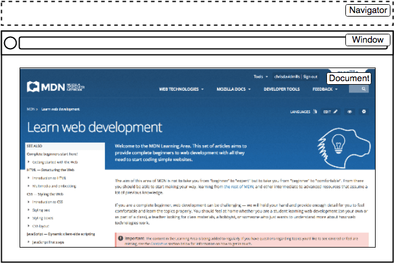
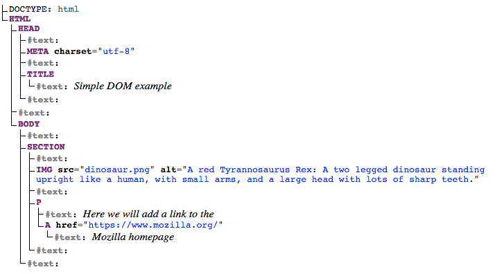

DOM scripting introduction
When writing web pages and apps, one of the most common things you'll want to do is change the document structure in some way. This is usually done by manipulating the Document Object Model (DOM) via a set of built-in browser APIs for controlling HTML and styling information. In this article we'll introduce you to DOM scripting.
| Prerequisites: | An understanding of HTML and the fundamentals of CSS, familiarity with JavaScript basics as covered in previous lessons. |
|---|---|
| Learning outcomes: |
|
The important parts of a web browser
Web browsers are very complicated pieces of software with a lot of moving parts, many of which can't be controlled or manipulated by a web developer using JavaScript. You might think that such limitations are a bad thing, but browsers are locked down for good reasons, mostly centering around security. Imagine if a website could get access to your stored passwords or other sensitive information, and log into websites as if it were you?
Despite the limitations, Web APIs still give us access to a lot of functionality that enable us to do a great many things with web pages. There are a few really obvious bits you'll reference regularly in your code — consider the following diagram, which represents the main parts of a browser directly involved in viewing web pages:

- The window represents the browser tab that a web page is loaded into; this is represented in JavaScript by the
Windowobject. Using methods available on this object you can do things like return the window's size (seeWindow.innerWidthandWindow.innerHeight), manipulate the document loaded into that window, store data specific to that document on the client-side (for example using a local database or other storage mechanism), attach an event handler to the current window, and more. - The navigator represents the state and identity of the browser as it exists on the web. In JavaScript, this is represented by the
Navigatorobject. You can use this object to retrieve things like the user's preferred language, a media stream from the user's webcam, etc. - The document (represented by the DOM in browsers) is the actual page loaded into the window, and is represented in JavaScript by the
Documentobject. You can use this object to return and manipulate information on the HTML and CSS that comprises the document, for example get a reference to an element in the DOM, change its text content, apply new styles to it, create new elements and add them to the current element as children, or even delete it altogether.
In this article we'll focus mostly on manipulating the document, but we'll show a few other useful bits besides.
The document object model
Let's provide a brief recap on the Document Object Model (DOM), which we also looked at earlier in the course. The document currently loaded in each one of your browser tabs is represented by a DOM. This is a "tree structure" representation created by the browser that enables the HTML structure to be easily accessed by programming languages — for example the browser itself uses it to apply styling and other information to the correct elements as it renders a page, and developers like you can manipulate the DOM with JavaScript after the page has been rendered.
Note: Scrimba's The Document Object Model MDN learning partner provides a handy walkthrough of the "DOM" term and what it means.
We have created an example page at dom-example.html (see it live also). Try opening this up in your browser — it is a very simple page containing a <section> element inside which you can find an image, and a paragraph with a link inside. The HTML source code looks like this:
<!doctype html>
<html lang="en-US">
<head>
<meta charset="utf-8" />
<title>Simple DOM example</title>
</head>
<body>
<section>
<img
src="dinosaur.png"
alt="A red Tyrannosaurus Rex: A two legged dinosaur
standing upright like a human, with small arms, and a
large head with lots of sharp teeth." />
<p>
Here we will add a link to the
<a href="https://www.mozilla.org/">Mozilla homepage</a>
</p>
</section>
</body>
</html>
The DOM on the other hand looks like this:

Note: This DOM tree diagram was created using Ian Hickson's Live DOM viewer.
Each entry in the tree is called a node. You can see in the diagram above that some nodes represent elements (identified as HTML, HEAD, META and so on) and others represent text (identified as #text). There are other types of nodes as well, but these are the main ones you'll encounter.
Nodes are also referred to by their position in the tree relative to other nodes:
- Root node: The top node in the tree, which in the case of HTML is always the
HTMLnode (other markup vocabularies like SVG and custom XML will have different root elements). - Child node: A node directly inside another node. For example,
IMGis a child ofSECTIONin the above example. - Descendant node: A node anywhere inside another node. For example,
IMGis a child ofSECTIONin the above example, and it is also a descendant.IMGis not a child ofBODY, as it is two levels below it in the tree, but it is a descendant ofBODY. - Parent node: A node which has another node inside it. For example,
BODYis the parent node ofSECTIONin the above example. - Sibling nodes: Nodes that sit on the same level under the same parent node in the DOM tree. For example,
IMGandPare siblings in the above example.
It is useful to familiarize yourself with this terminology before working with the DOM, as a number of the code terms you'll come across make use of them. You'll also come across them in CSS (for example, descendant selector, child selector).
Doing some basic DOM manipulation
To start learning about DOM manipulation, let's begin with a practical example.
-
Take a local copy of the dom-example.html page and the image that goes along with it.
-
Add a
<script></script>element just above the closing</body>tag. -
To manipulate an element inside the DOM, you first need to select it and store a reference to it inside a variable. Inside your script element, add the following line:
jsconst link = document.querySelector("a"); -
Now we have the element reference stored in a variable, we can start to manipulate it using properties and methods available to it (these are defined on interfaces like
HTMLAnchorElementin the case of<a>element, its more general parent interfaceHTMLElement, andNode— which represents all nodes in a DOM). First of all, let's change the text inside the link by updating the value of theNode.textContentproperty. Add the following line below the previous one:jslink.textContent = "Mozilla Developer Network"; -
We should also change the URL the link is pointing to, so that it doesn't go to the wrong place when it is clicked on. Add the following line, again at the bottom:
jslink.href = "https://developer.mozilla.org";
Note that, as with many things in JavaScript, there are many ways to select an element and store a reference to it in a variable. Document.querySelector() is the recommended modern approach. It is convenient because it allows you to select elements using CSS selectors. The above querySelector() call will match the first <a> element that appears in the document. If you wanted to match and do things to multiple elements, you could use Document.querySelectorAll(), which matches every element in the document that matches the selector, and stores references to them in an array-like object called a NodeList.
There are older methods available for grabbing element references, such as:
Document.getElementById(), which selects an element with a givenidattribute value, e.g.,<p id="myId">My paragraph</p>. The ID is passed to the function as a parameter, i.e.,const elementRef = document.getElementById('myId').Document.getElementsByTagName(), which returns an array-like object containing all the elements on the page of a given type, for example<p>s,<a>s, etc. The element type is passed to the function as a parameter, i.e.,const elementRefArray = document.getElementsByTagName('p').
These two work better in older browsers than the modern methods like querySelector(), but are not as convenient. Have a look and see what others you can find!
Creating and placing new nodes
The above has given you a little taste of what you can do, but let's go further and look at how we can create new elements.
-
Going back to the current example, let's start by grabbing a reference to our
<section>element — add the following code at the bottom of your existing script (do the same with the other lines too):jsconst sect = document.querySelector("section"); -
Now let's create a new paragraph using
Document.createElement()and give it some text content in the same way as before:jsconst para = document.createElement("p"); para.textContent = "We hope you enjoyed the ride."; -
You can now append the new paragraph at the end of the section using
Node.appendChild():jssect.appendChild(para); -
Finally for this part, let's add a text node to the paragraph the link sits inside, to round off the sentence nicely. First we will create the text node using
Document.createTextNode():jsconst text = document.createTextNode( " — the premier source for web development knowledge.", ); -
Now we'll grab a reference to the paragraph the link is inside, and append the text node to it:
jsconst linkPara = document.querySelector("p"); linkPara.appendChild(text);
That's most of what you need for adding nodes to the DOM — you'll make a lot of use of these methods when building dynamic interfaces (we'll look at some examples later).
Moving and removing elements
There may be times when you want to move nodes, or delete them from the DOM altogether. This is perfectly possible.
If we wanted to move the paragraph with the link inside it to the bottom of the section, we could do this:
sect.appendChild(linkPara);
This moves the paragraph down to the bottom of the section. You might have thought it would make a second copy of it, but this is not the case — linkPara is a reference to the one and only copy of that paragraph. If you wanted to make a copy and add that as well, you'd need to use Node.cloneNode() instead.
Removing a node is pretty simple as well, at least when you have a reference to the node to be removed and its parent. In our current case, we just use Node.removeChild(), like this:
sect.removeChild(linkPara);
When you want to remove a node based only on a reference to itself, which is fairly common, you can use Element.remove():
linkPara.remove();
This method is not supported in older browsers. They have no method to tell a node to remove itself, so you'd have to do the following:
linkPara.parentNode.removeChild(linkPara);
Have a go at adding the above lines to your code.
Manipulating styles
It is possible to manipulate CSS styles via JavaScript in a variety of ways.
To start with, you can get a list of all the stylesheets attached to a document using Document.styleSheets, which returns an array-like object with CSSStyleSheet objects. You can then add/remove styles as wished. However, we're not going to expand on those features because they are a somewhat archaic and difficult way to manipulate style. There are much easier ways.
The first way is to add inline styles directly onto elements you want to dynamically style. This is done with the HTMLElement.style property, which contains inline styling information for each element in the document. You can set properties of this object to directly update element styles.
-
As an example, try adding these lines to our ongoing example:
jspara.style.color = "white"; para.style.backgroundColor = "black"; para.style.padding = "10px"; para.style.width = "250px"; para.style.textAlign = "center"; -
Reload the page and you'll see that the styles have been applied to the paragraph. If you look at that paragraph in your browser's Page Inspector/DOM inspector, you'll see that these lines are indeed adding inline styles to the document:
html<p style="color: white; background-color: black; padding: 10px; width: 250px; text-align: center;"> We hope you enjoyed the ride. </p>
Note:
Notice how the JavaScript property versions of the CSS styles are written in lower camel case whereas the CSS versions are hyphenated (kebab-case) (e.g., backgroundColor versus background-color). Make sure you don't get these mixed up, otherwise it won't work.
There is another common way to dynamically manipulate styles on your document, which is to write the styles in a separate stylesheet, and reference those styles by adding/removing a class name.
-
Delete the previous five lines you added to the JavaScript.
-
Add the following inside your HTML
<head>:html<style> .highlight { color: white; background-color: black; padding: 10px; width: 250px; text-align: center; } </style> -
To add this class name to your element, use the element's
classList'sadd()method:jspara.classList.add("highlight"); -
Refresh your page, and you'll see no change — the CSS is still applied to the paragraph, but this time by giving it a class that is selected by our CSS rule, not as inline CSS styles.
Which method you choose is up to you; both have their advantages and disadvantages. The first method takes less setup and is good for simple uses, whereas the second method is more purist (no mixing CSS and JavaScript, no inline styles, which are seen as a bad practice). As you start building larger and more involved apps, you will probably start using the second method more, but it is really up to you.
At this point, we haven't really done anything useful! There is no point using JavaScript to create static content — you might as well just write it into your HTML and not use JavaScript. It is more complex than HTML, and creating your content with JavaScript also has other issues attached to it (such as not being readable by search engines).
In the next section we will look at a more practical use of DOM APIs.
Note: You can find our finished version of the dom-example.html demo on GitHub (see it live also).
Creating a dynamic shopping list
In this exercise, we want you to build a dynamic shopping list that allows you to add items using a form input and a button. After you type an item in the input field and click the button or press the Enter key, the following should happen:
- The item should appear in the list.
- Each item should have a button next to it that removes the item from the list when clicked.
- The input fields should be cleared and focused, ready for the next item entry.
The finished demo will look something like the following — try it out before you build it!
To complete the exercise, follow the steps below, and make sure that the list behaves as described above.
- To begin, download a copy of our shopping-list.html starting file and make a copy of it somewhere. You'll see that it has some minimal CSS, a form with a label, input, and button, an empty list, and a
<script>element. You'll be making all your additions inside the script. - Create three variables that hold references to the list (
<ul>),<input>, and<button>elements. - Create a function that will run in response to the button being clicked.
- Inside the function body, start by calling
preventDefault(). Since the input is wrapped in a form element, pressing the Enter key will trigger the form to submit. The call topreventDefault()will prevent the form from refreshing the page so a new item can be added to the list instead. - Continue by storing the current value of the input in a variable.
- Next, clear the input element by setting its value to an empty string (
""). - Create three new elements — a list item (
<li>), a<span>, and a<button>— and store them in variables. - Append the span and button as children of the list item.
- Set the text content of the span to the input value you saved earlier, and set the text content of the button to
Delete. - Append the list item to the list.
- Attach an event handler to the Delete button so that, when clicked, it removes the entire list item (
<li>...</li>). - Finally, use the
focus()method to focus the input element, so it's ready for entering the next shopping list item.
Summary
We have reached the end of our study of document and DOM manipulation. At this point you should understand what the important parts of a web browser are with respect to controlling documents and other aspects of the user's web experience. Most importantly, you should understand what the Document Object Model is, and how to manipulate it to create useful functionality.
See also
- There are lots more features you can use to manipulate your documents. Check out some of our references and see what you can discover:
- DOM Scripting, explainers.dev